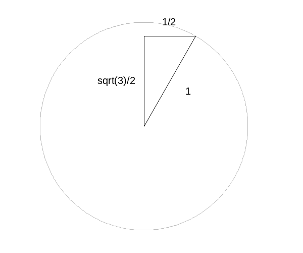
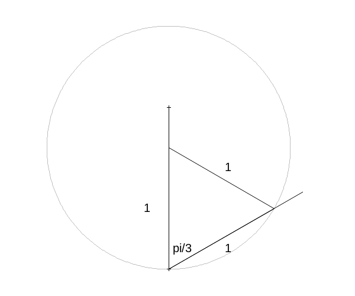
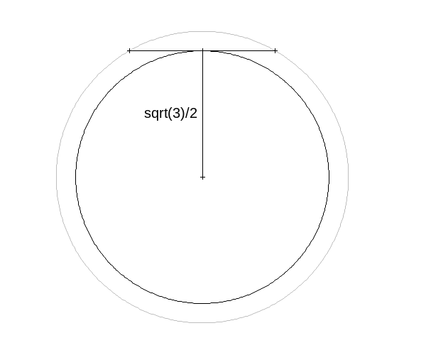

aez-notes
Lengths of Random Chords
If a chord is selected at random on a fixed circle, what is the probability that its length exceeds the radius of the circle?
This is a classic example used to demonstrate the importance of making your probability distribution explicit. Three solutions are presented below as diagrams to illustrate particular distributions.
Uniform distribution on a horizontal chord
The solution in this case is \(\sqrt{3}/2\).

load(draw)$ h : sqrt(3) / 2; draw2d( /* Draw the unit circle */ <<draw-circle>> /* Draw the triangle */ color = "black", triangle([0,0], [0,h], [1/2,h]), /* Annotate the diagram */ font = "Arial", font_size = 15, label( ["1/2", 1/4, 1], ["1", h/2, 1/3], ["sqrt(3)/2", -1/4, h/2]), /* Set up the output */ <<setup-output>> file_name = "problem-25-a", terminal = 'png )$
Uniform distribution over the angle
The solution in this case is \(2/3\).

draw2d( /* Draw the unit circle */ <<draw-circle>> /* Draw the lines */ color = "black", points_joined = true, points([0,(8/6) * cos(%pi/6)],[-1,(8/6)*sin(%pi/6)-1]), points([0,0],[-1,2/6]), /* Draw the triangle */ triangle([0,0], [0,-1], [cos(%pi/6), sin(%pi/6)-1]), /* Annotate the diagram */ font = "Arial", font_size = 15, label( ["1", -1/6, -1/2], ["1", 1/2, -1/6], ["1", 1/2, -5/6], ["pi/3", 1/8, -5/6]), /* Set up the output */ <<setup-output>> file_name = "problem-25-b", terminal = 'png )$
Uniform distribution on center point
The solution in this case is \(3/4\).

draw2d( /* Draw the unit circle */ <<draw-circle>> /* Draw the lines */ color = "black", points_joined = true, points([0,0],[0,h]), points([-1/2,1/2],[h,h]), /* Draw the inner circle */ line_type = dashes, ellipse(0,0,h,h,0,360), /* Annotate the diagram */ font = "Arial", font_size = 15, label( ["sqrt(3)/2", -1/5, h/2]), /* Set up the output */ <<setup-output>> file_name = "problem-25-c", terminal = 'png )$
Helpers
Drawing the circle
draw-circle
nticks = 500, color = "grey", line_type = solid, transparent = true, ellipse(0,0,1,1,0,360),
Set up output
setup-output
xrange = [-1.1,1.1], yrange = [-1.1,1.1], axis_bottom = false, axis_left = false, axis_top = false, axis_right = false, xtics = false, ytics = false, proportional_axes = 'xy,